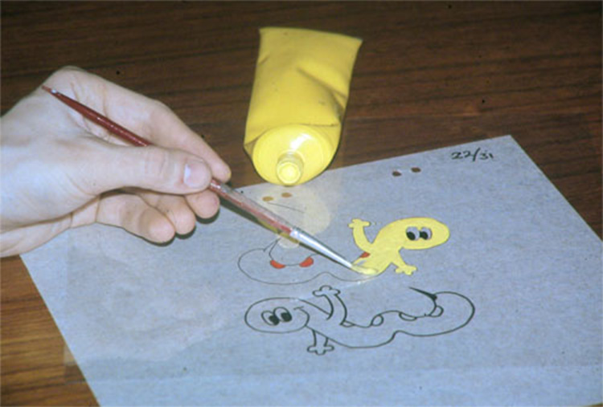

Before the modern computer animation, the technique of animation was called traditional, cel or hand-drawn animation. It was the dominant form of animation that appeared in cinemas and movies up until the late 1900s and early 2000s. Traditional animation was much more complex and tedious. You would draw sequences of the animation on to transparent peices of paper using water colors. Then you would take photos of each frames to create the film. Though now with the development of computers and technology, animation has become easier to produce and faster to be mass produced.
Another development of animation was the transition from 2D animation to 3D animation. The difference between the two animation types were that in 2D animation, artists would draw every frame while in 3D animation, you would create a 3D model of each part of the scene to make the animation "pop out" more. Even though animation was harder to animation, it was more expressive in the emotions and textures it can show. Many additional 3D animation softwares have also been created to make 3D animation easier and more natural.
